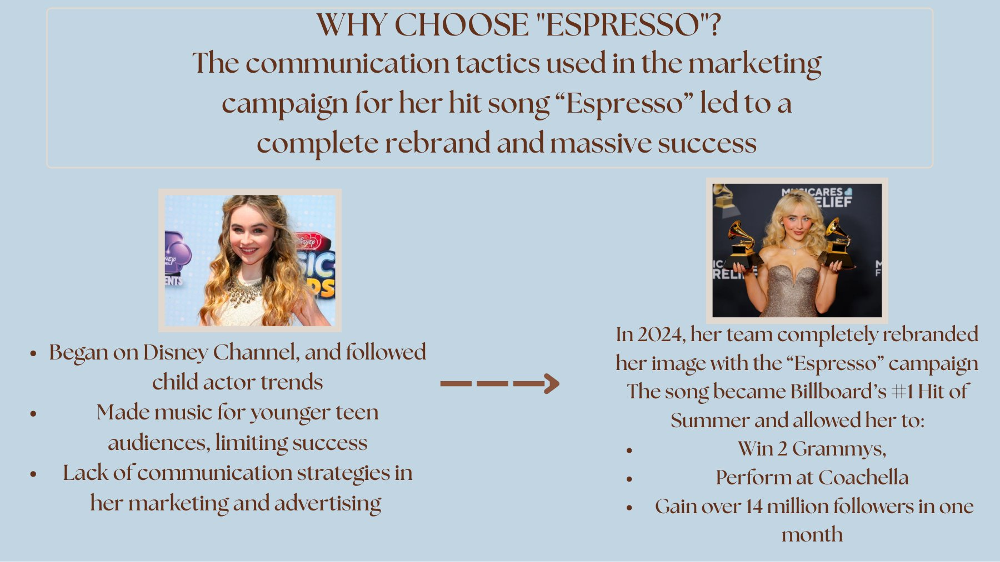
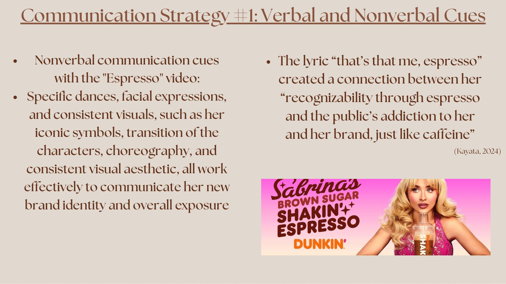
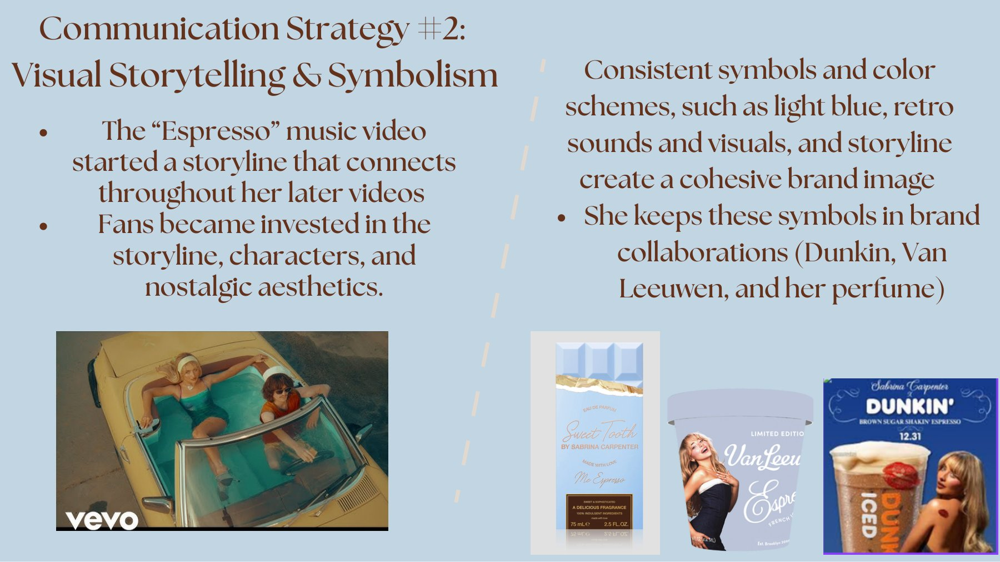
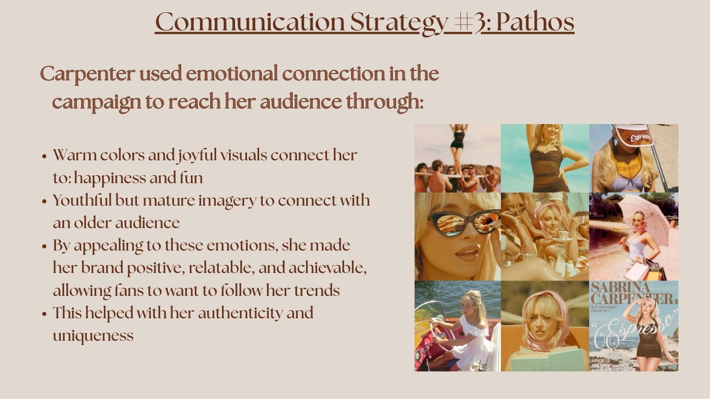
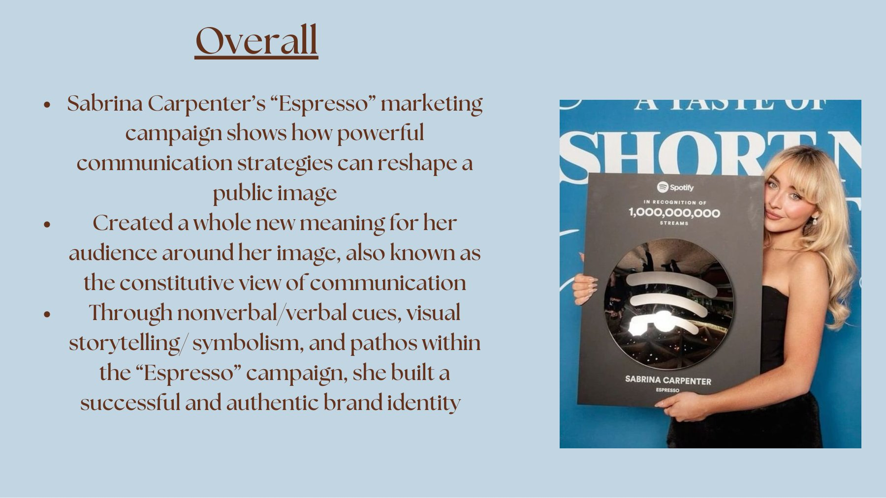

Campaign Analysis • COMM 101 · Communication strategy analysis
Sabrina Carpenter's "Espresso" Campaign
How the "Espresso" campaign used communication strategy to completely rebrand Sabrina Carpenter's public image.
StatusPresentation
RolePresenter
ToolsCanva / Slides
TypeCOMM 101 · 6 slides
The Story
Behind the project
This presentation looks at how a rebrand shifted Carpenter from Disney Channel and teen-audience roots to a mature, highly recognizable brand. It reports that the campaign coincided with Billboard's #1 song of the summer, two Grammys, a Coachella performance, and over 14 million new followers in one month.
Strategy 1: Verbal & nonverbal cuesThe "that's that me, espresso" hook links her recognizability to caffeine-like addiction. Choreography, expressions, and visuals reinforce the new identity.
Strategy 2: Visual storytellingA connected storyline across videos, plus consistent light-blue retro visuals, carried into collabs with Dunkin', Van Leeuwen, and her perfume.
Strategy 3: PathosWarm, joyful visuals and youthful-but-mature imagery made the brand positive, relatable, and authentic.
ConclusionAn example of the constitutive view of communication, where the campaign created a whole new meaning around her image.
the work
Gallery
Click any image to enlarge.






let's work together
Let's create something people remember. ♡
Have a project, internship, or opportunity? I'd love to hear about it.
Get in Touch LinkedIn